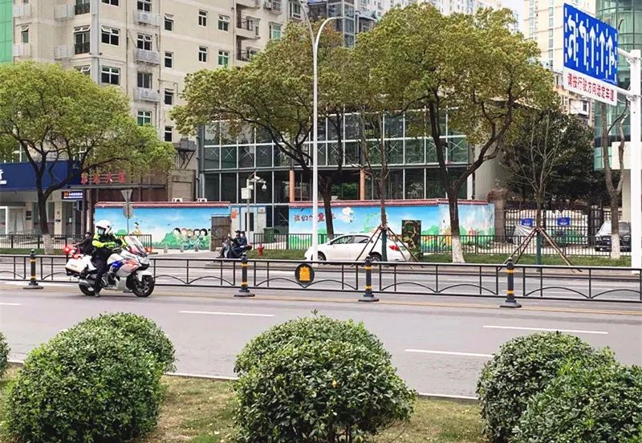
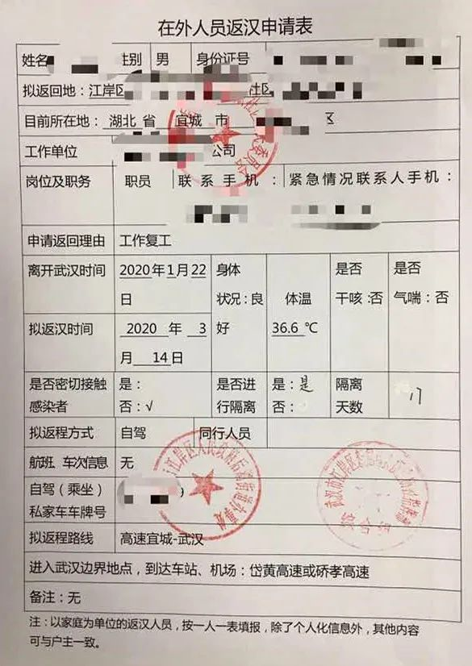
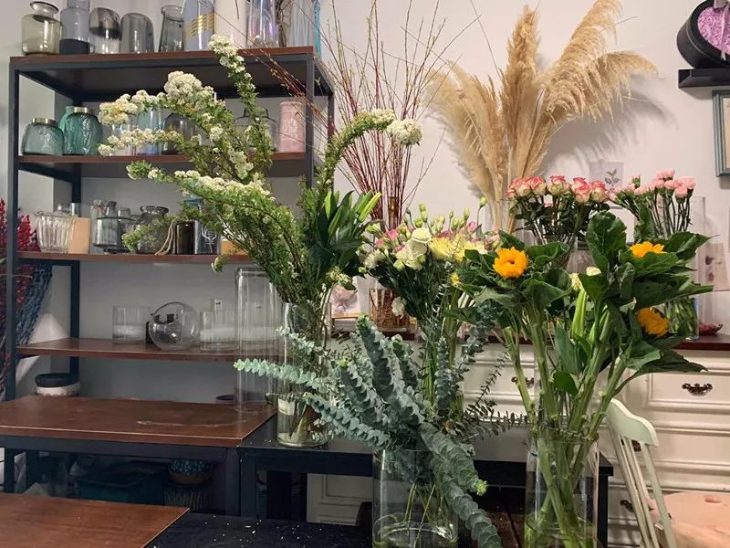
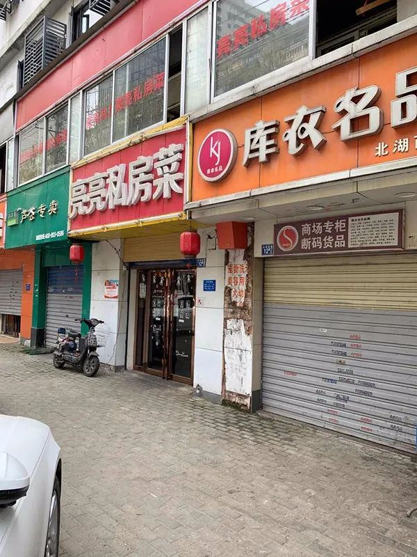

《财经》调研：36%企业未复工，疫情倒逼企业数字化升级
原文链接 备份链接 参与《财经》调研的多位企业人士表示，希望政府的金融扶持能更好地惠及小微企业 文 | 《财经》记者 周源 编辑 | 谢丽容 进入2020年3月以来，中国的新冠肺炎疫情蔓延已得到了有力控制，新增确诊和新增疑似病例呈逐日大幅 …
记者/ 杨宝璐
编辑/ 宋建华

武汉街头已能看到少量的行人、车辆
回到武汉，开车上三环，刘凯朝窗外看了一眼，瞬间差点没忍住情绪。“路上就一个穿防护服的，应该是个医护人员，我真是除了在凌晨两三点，没见过这样的武汉。”
在经历了62天封城之后，这座错过了春天的城市，正在逐渐苏醒过来。根据湖北省疫情防控工作指挥部消息，武汉一般企业不早于3月20日24时前复工；自3月25日起，湖北省除武汉市以外地区解除离鄂通道管控。
最明显的变化在街头。白日里汽车的声音多了起来，小商超关着一半的卷闸门终于打开，门口有了戴着口罩排队的顾客，而无疫情小区的居民们终于结束了“不知岁月”的隔离生活，探一下窗外的温度，出门透上一口气，挎上包，重新回到工作岗位上。

在外返汉人员都需持有相关证明

回汉，六个章加十四天隔离
3月18日，家在襄阳宜城的刘凯开了整整6个小时的车，终于返回了武汉。在此之前，这段路程只需要三个多小时。
他已经忍不住想要赶紧回到工作岗位上去了。这不是他一个人的想法，在他所在的公司群里，约有100个非武汉的同事，“大家有个共同的心声，就是想去现场上班。 ”
今年的工作开启得毫无仪式感，由于他所在的通讯行业大部分工作可以实现线上办理，大年初三，刘凯就开始了居家办公。原本清晰的上下班、工作日和休息日的分界线变得模糊起来，晚上，工作群信息会弹到凌晨一两点，安静到早上六点多，就又活跃了起来。“精神一直绷着，可能吃饭时刚拿起筷子，手机就又开始响。”刘凯说。
3月14日，他开始准备回武汉的材料。为求踏实，他把所有能盖的章全都盖了一遍。
“当时政策不断在变。”刘凯说。他在老家所在的社区提出申请后，社区让他先跟武汉方面联系。刘凯的房子在武汉市江岸区，所在社区告诉他，想要返汉，必须提供健康证明。
手机APP上的防疫绿码并非有效的通行证，武汉社区提出，必须由刘凯父母家所在社区提供健康证明。“网格员说，你手机上的绿码怎么来的？还不是你自己每天打卡，你说健康就健康。”因此必须要求老家社区开具证明。但实际上，老家社区开具健康证明，主要依据也是个人自觉上报体温。自从疫情以来，老家社区就要求小区业主在群里每天上报两次体温，为此，刘凯父亲在群里打了一个月的卡。
拿到健康证明后，刘凯又填了一份返汉申请表，交由武汉自己家所在社区盖章后，再上报给对应的街道和区里的防疫指挥部去盖章。 在拿到武汉方面盖了三个章的电子档之后，刘凯又在老家的社区走了一遍同样的流程。
“当时我们老家这边社区的工作人员跟我说，其实有武汉的证明就可以直接上高速，但我担心中间再有什么变数，就坚持把能盖的章都盖了。 ”刘凯说，毕竟，他了解的情况是，之前有人在高速路口排了10个小时的队，最后却因为某项手续不全而不得不掉头。
3月18号上午，刘凯终于盖齐了六个章，揣着一份返汉申请表、一份健康证明、外加一份宜城要求填写的“疫情结束前绝不返回老家”的承诺书——“还按了红手印，当时我家没印泥，拿红笔在手上涂了好久，然后按了一个”——上了路。
上高速的检查简单，只需核对车辆信息、身份资料和测体温，但下高速时，还要检查返汉证明，甚至打开后备箱检查，以免后备箱藏人或者活禽等违禁物品。一路上，刘凯每路过一个服务区就得停下来一会儿，回复工作信息。一路上经过五个服务站，他停下五次，到了武汉，已经是晚上七点。
阔别两月，燃气灶线路因长时间没用而断掉了，打开冰箱保鲜层，水果坏了一半。“走之前我爸让我把冰箱的电断一下，幸亏没断，谁能知道这一隔就是两个月。”刘凯说。但人到了武汉，依旧还得在家办公，他距离办公室还有14天的隔离期。

瞿翔工厂车间消杀和发货的场景
30个人的工厂到岗8人
坐不住的不仅仅是上班族，经济压力是悬在城市头上的达摩克里斯之剑，据国家统计局数据，2020年1-2月，全国规模以上工业增加值同比下滑13.5%，固定资产投资同比下降24.5%，社会消费品零售总额同比下降20.5%。
进入三月后，湖北地区的复工提上了日程，根据湖北省疫情防控工作指挥部3月18日的消息，武汉一般企业不早于3月20日24时前复工。
相较于武汉，湖北其他地区在疫情风险等级降低、确诊清零之后，陆续推进复工。3月17日，瞿翔开设在孝感的鑫福星纸塑科技有限公司正式复产，由于疫情防控，复工后，30多个人的企业只到了8个人。
瞿翔的公司主做一次性餐具包装。其实，在2月中旬疫情严峻之时，当地政府曾建议他们开工，因为他们的产品属于防护急需物资——餐馆不能堂食、各地需要给医护人员提供餐饮，这些都需要大量的一次性餐具。但那时，工厂的技术员都在外地，回孝感手续繁琐，瞿翔没能协调好这些手续，错过了复工的机会。
瞿翔告诉记者，在孝感，用于保障民生的企业复工率比较高。早在三月上旬，就有企业陆续复工。他的企业是第一批申请复工复产的企业，当时，有二三十家企业同批申请，截止到采访时，第四批申请已经上报审核了。
春节时期订单都发不出去，新的订单没法生产，停工两个月，瞿翔损失了二三十万，资金周转也出现了问题，一复工就找银行贷了款。“毕竟停工两个月都没进账，还要承担二三十个人的各项费用，但是没办法，碰到这个事情了，就必须得担着。”
从申报到重新开厂，流程走了一个礼拜。“当时政策一天一变，光填表就填了十几个”，瞿翔说。外地返工人员不仅需要企业接收证明，进入孝感交通也是个问题，瞿翔告诉记者，他除了要盯着复工，还得在网上帮员工留意拼车信息。
复工三天，一共来了八个员工，十六条生产线也只开了三条，为了满足订单需求，生产线开足马力，二十四小时生产。最大的一笔订单是600箱餐具，光这一个订单，一条生产线就得连续运转四天才能生产出来。
18号，瞿翔开始组织发货，这才发现，物流成了现阶段最大的问题。“客户有两类，一类是要货量比较大的，这种可以用货车整车运输；另一类是要货量比较小的客户，这种一般找第三方物流公司运送。 ”瞿翔解释，物流公司多在武汉中心服务区的物流园，但目前仍未完全复工，疫情尚未解除之时，运费价格涨了不少，瞿翔算了一笔账，以前运一车货物到河南只需要1000元运费，现在则涨到1500元，甚至1800元。
运费涨了，但行业价格透明，为了保持竞争力，产品定价却不能涨，复工之后，瞿翔先后运了两批货到长春和重庆。“现在赚钱肯定是不可能的，只能保证不亏，就少赔当赚了。”

夏诗重新开门的花店
再不开业，房租都要付不起了
不仅生产企业艰难，武汉人民闭门在家两月，消费也随之萎缩。夏诗的花店重新开张之后，两天内只收到五个订单。
3月21日是周六，是武汉“一般企业不得早于20日24点复工”规定的第二天，夏诗一早出了门，去循礼门花市进货，准备花店复工。
循礼门花市是她常去的花市，但她去提货时，花却没能按时送到，现场也只有寥寥几个花店店主。“估计整个武汉也就二三十家花店开门吧。”她说。供货商向她保证，第二天肯定能到，于是开店日期又推了一天，22日一大早，夏诗就去店里，倒掉置放了两个月的发了霉的水，清理店铺。
这一次，她只进了五百块的货，天气渐渐热了，花材只能放七到十天，路上行人不多，更罔论来线下买花的人，夏诗打开了电商平台上的网店，专心打理线上生意。她不敢进贵重的进口花，就只进了一些玫瑰、康乃馨、向日葵之类的常见花卉——往常这个时候是鲜花需求旺季，每次进货都得进两三千的货，但现在进得多赔得多。
疫情持续了整个春天，这让她错过了两个重要节日——情人节和三八妇女节。其中，情人节是一年当中生意最好的时候，“我们这个店一天的纯利润就有两万。”进项没了，但一个月五千块的房租在那儿摆着，是硬项支出，小区一解禁，夏诗立马就决定，赶紧重新开张。
关店是在1月22日，当时，店里还有好几千元的货没卖掉。夏诗告诉记者，按照武汉的风俗，大年初一人们会去“烧清香”，买菊花祭奠先人。往年，花店都会在春节前备好菊花，卖得好的店一天收入几万。“但今年大家都比较惨，几万块的花都扔了。”
在新冠肺炎袭城的恐慌中，生存的恐慌挤占了人们生活的绝大部分，似乎没人再有心情去买上一束花装点新春，生意冷清，夏诗的家人也不愿让她继续开店，催促着她赶紧回家隔离。
但仍有人找上门来。夏诗关店之后，有个老客户拜托她一定想办法，送一束99朵玫瑰花。那是大年初三，客户刚刚成为新手爸爸，赶上出院的妻子过生日，“他说现在也不知道该给妻子送些什么，就想订一束花，只要那一天送到就行，无论什么时候都可以。”夏诗说。
彼时，她店里的花已经半卖半送解决了一批，剩下的质量都不太好，为了这个订单，夏诗专门跑了一趟鲜花市场，并亲自送到了客户的小区门口。“我觉得现在愿意花钱给妻子买花，真的很不容易——这时候买花有什么用啊，还不如买点吃的。但大家闷在家里，需要一点赏心悦目的精神享受。”
那是她整个春节的最后一单。直到重新开张之前，她再没去过店里。2月7日那天，她接到二三十通电话，都是想要订花送到中心医院，献给那天去世的李文亮医生，但那时候，她店里已经没什么剪枝鲜花了。
由于关店仓促，夏诗也没想到，后续还会发展到小区封禁，年前的花就那么存放在花店里。两个月后再打开门，满地都是衰败的盆花和绿萝，培养水也发了臭，她花了一上午，才清理干净。
但最让她欣慰的是，有一簇红柳在60天的闭店中存活了下来，不仅长势喜人，抽出了嫩绿的新芽，泡在瓶里的部分，还生出一团团的须根来。

街头有店铺已经拉开卷闸门恢复营业
并未解封的武汉物流
夏诗之所以没有按时收到花，是因为她的上游供货商雨轩并没有按时拿到货。实际上，直到现在，武汉的物流业也并未完全恢复，直到3月19日，鲜花批发商雨轩才依托运蔬菜的车，中间夹带了几箱鲜花，勉强在朋友圈“复工”了。
“春季其实是最好的时候，一个季度的（收入）可以撑一年。但因为疫情，损失起码有40万。”雨轩说。
雨轩告诉记者，三月五六号时，为了筹备三八妇女节给医护人员送花，武汉当地政府与中铁快运专门公对公运输了一批鲜花，“中铁快运可以走，但运的总量很少，而且时间很慢。”
目前，循礼门花市尚未正式复工，40多家批发商还在等待居委会的统一安排，雨轩估计，得等到武汉正式解封，他们的生意才能恢复正常。这意味着，错过了情人节和三八妇女节销售旺季的他们，还会错过清明节的销售季。以前每年清明，几乎一家店就要进个十来箱菊花，但如今，每次进货只能混在蔬菜运输车里运进来一两箱，且并不能保证每天都能运到。
“现在进花，要头一天晚上才能订，人家运蔬菜的车有位置才能带货，没位置不能带。”雨轩解释道，这样时间上就顺延24小时，对应的下游客户提货也就要滞后了，对于鲜花这种消耗品而言，每耽搁一天，品质就会差一些。
而针对武汉市“第一类企业可以继续复工复产，其他企业按照不早于3月20日24时前复工复产”的要求，第一类，是跟生产生活密切相关的企业以及春节以来一直没有停工的企业，第二类则主要指金融保险、港口和货运站场，重点产业链配套企业，这些企业涉及到物流、资金、产业链等重要环节，也作为优先复工复产的企业类别。
1月23日武汉禁行之后，大部分快递公司暂停了收派工作。只有京东、顺丰和邮政三家快递企业维持运转。顺丰湖北公共事务部何向军告诉记者，武汉封城前，顺丰有1000多名小哥值春节班，武汉封城之后，陆续有两千多名小哥来返回武汉工作岗位参加保供工作。在疫情严重的阶段，他们优先保障医疗物资和民生物资的运送，停掉了其他一般货物的运送。3月14—23日期间，顺丰为援鄂医疗队总共提供了78000件行李的免费寄递。至3月19日，京东物流累计承运医疗应急物资超过6000万件，总重量约3万吨，同时，将来自全国的超过8000吨医疗应急物资和生活物资送至湖北。
据媒体报道，截至3月21日，武汉十二家快递企业2000多个网店已恢复正常营运，邮政主管部门称，到3月25日，武汉市绝大部分快递企业都将恢复正常的寄递服务。
（文中除瞿翔外，其余采访对象为化名）
【反侵权公告】本文由北京青年报在腾讯新闻首发，未经授权，不得转载。


复阳不是再感染，密接人群超1.2%隐性感染或发病 | 深度对话

最后的告别 | 深度报道

警务值班室内的重伤案：护母冲动下的正当防卫之辩 | 深度报道

原文链接 备份链接 参与《财经》调研的多位企业人士表示，希望政府的金融扶持能更好地惠及小微企业 文 | 《财经》记者 周源 编辑 | 谢丽容 进入2020年3月以来，中国的新冠肺炎疫情蔓延已得到了有力控制，新增确诊和新增疑似病例呈逐日大幅 …
原文链接 备份链接 武汉的当务之急 是在科学抗疫和有序复工之间寻求一个平衡 2月3日，工人在武汉雷神山医院建设工地施工。疫情期间，武汉市新建了火神山、雷神山医院，改造建成方舱医院33个，提供方舱医院床位35673个。摄影/ …
原文链接 备份链接 作为仅次于美国的全球供应链中心、全球最大的制造业中心，中国制造能否应对疫情对供应链的冲击举世瞩目 要点 1，复产难过复工，半数企业产能恢复不到6成，半数企业预计3月底完全恢复产能 2，企业需要“链式协同复工”，每个企 …
原文链接 备份链接 2019年上半年占据湖北省GDP约五分之一的112家省内上市公司，目前复工情况各异。部分公司影响不大，但也有企业收入面临较大下滑风险 文丨《财经》记者 张建锋 王颖 张欣培 刘以秦 编辑丨陆玲 3月16日，《财经》记 …
原文链接 备份链接 温州抗疫的“小目标”在变：1月29日是“奋战十天、拿下拐点”；如今是“力争到3月10日，企业复工率、产能恢复率达100%”。 本文 5464字，阅读全文约8分钟 文| 《财经》记者 王静仪 编辑 | 施智梁 2月初将浙 …